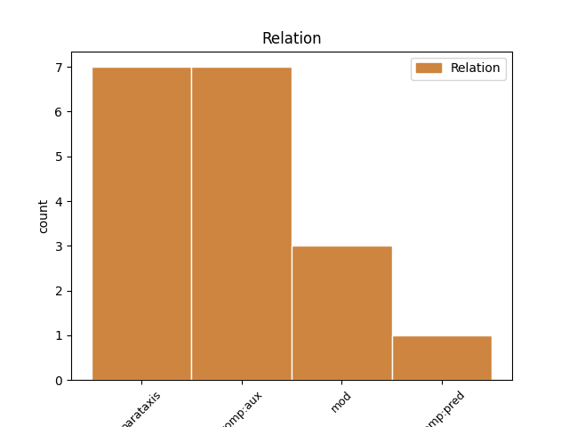
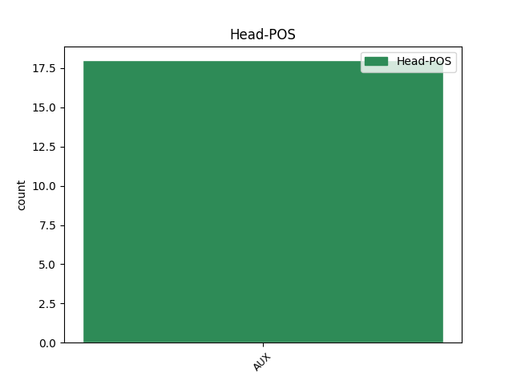
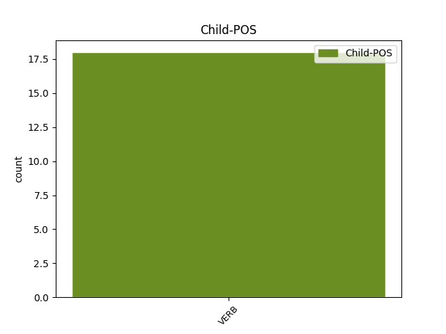

Distribution of features within this leaf



Agreement Rules sorted by frequency.
- When the dependent token is the parataxis(parataxis) of the head token, and the head token is AUX and the dependent token is VERB.
1 " _ _ _ _ 0 _ _ _
2 That _ _ _ _ 0 _ _ _
3 King _ _ _ _ 0 _ _ _
4 Shakespeare _ _ _ _ 0 _ _ _
5 " _ _ _ _ 0 _ _ _
6 , _ _ _ _ 0 _ _ _
7 the _ _ _ _ 0 _ _ _
8 essayist _ _ _ _ 0 _ _ _
9 Thomas _ _ _ _ 0 _ _ _
10 Carlyle _ _ _ _ 0 _ _ _
11 wrote write VERB V Mood=Ind|Person=3|Tense=Past|VerbForm=Fin 16 parataxis _ _
12 in _ _ _ _ 0 _ _ _
13 1840 _ _ _ _ 0 _ _ _
14 , _ _ _ _ 0 _ _ _
15 " _ _ _ _ 0 _ _ _
16 does do AUX VM Mood=Ind|Number=Sing|Person=3|Tense=Pres|VerbForm=Fin 0 _ _ _
17 not _ _ _ _ 0 _ _ _
18 he _ _ _ _ 0 _ _ _
19 shine _ _ _ _ 0 _ _ _
20 , _ _ _ _ 0 _ _ _
21 in _ _ _ _ 0 _ _ _
22 crowned _ _ _ _ 0 _ _ _
23 sovereignty _ _ _ _ 0 _ _ _
24 , _ _ _ _ 0 _ _ _
25 over _ _ _ _ 0 _ _ _
26 us _ _ _ _ 0 _ _ _
27 all _ _ _ _ 0 _ _ _
28 , _ _ _ _ 0 _ _ _
29 as _ _ _ _ 0 _ _ _
30 the _ _ _ _ 0 _ _ _
31 noblest _ _ _ _ 0 _ _ _
32 , _ _ _ _ 0 _ _ _
33 gentlest _ _ _ _ 0 _ _ _
34 , _ _ _ _ 0 _ _ _
35 yet _ _ _ _ 0 _ _ _
36 strongest _ _ _ _ 0 _ _ _
37 of _ _ _ _ 0 _ _ _
38 rallying _ _ _ _ 0 _ _ _
39 signs _ _ _ _ 0 _ _ _
40 ; _ _ _ _ 0 _ _ _
1 " _ _ _ _ 0 _ _ _
2 Just _ _ _ _ 0 _ _ _
3 as _ _ _ _ 0 _ _ _
4 his _ _ _ _ 0 _ _ _
5 father _ _ _ _ 0 _ _ _
6 had have AUX VA Mood=Ind|Person=3|Tense=Past|VerbForm=Fin 0 _ _ _
7 worked work VERB V Mood=Ind|Person=3|Tense=Past|VerbForm=Fin 6 comp:aux _ _
8 his _ _ _ _ 0 _ _ _
9 way _ _ _ _ 0 _ _ _
10 up _ _ _ _ 0 _ _ _
11 from _ _ _ _ 0 _ _ _
12 poverty _ _ _ _ 0 _ _ _
13 into _ _ _ _ 0 _ _ _
14 respectable _ _ _ _ 0 _ _ _
15 society _ _ _ _ 0 _ _ _
16 , _ _ _ _ 0 _ _ _
17 Balzac _ _ _ _ 0 _ _ _
18 considered _ _ _ _ 0 _ _ _
19 toil _ _ _ _ 0 _ _ _
20 and _ _ _ _ 0 _ _ _
21 effort _ _ _ _ 0 _ _ _
22 his _ _ _ _ 0 _ _ _
23 real _ _ _ _ 0 _ _ _
24 mark _ _ _ _ 0 _ _ _
25 of _ _ _ _ 0 _ _ _
26 nobility _ _ _ _ 0 _ _ _
27 . _ _ _ _ 0 _ _ _
1 Individuals _ _ _ _ 0 _ _ _
2 or _ _ _ _ 0 _ _ _
3 entities _ _ _ _ 0 _ _ _
4 who _ _ _ _ 0 _ _ _
5 have _ _ _ _ 0 _ _ _
6 received _ _ _ _ 0 _ _ _
7 Derivative _ _ _ _ 0 _ _ _
8 Works _ _ _ _ 0 _ _ _
9 or _ _ _ _ 0 _ _ _
10 Collective _ _ _ _ 0 _ _ _
11 Works _ _ _ _ 0 _ _ _
12 from _ _ _ _ 0 _ _ _
13 You _ _ _ _ 0 _ _ _
14 under _ _ _ _ 0 _ _ _
15 this _ _ _ _ 0 _ _ _
16 License _ _ _ _ 0 _ _ _
17 , _ _ _ _ 0 _ _ _
18 however _ _ _ _ 0 _ _ _
19 , _ _ _ _ 0 _ _ _
20 will will AUX VM Mood=Ind|Person=3|Tense=Pres|VerbForm=Fin 0 _ _ _
21 not _ _ _ _ 0 _ _ _
22 have _ _ _ _ 0 _ _ _
23 their _ _ _ _ 0 _ _ _
24 licenses _ _ _ _ 0 _ _ _
25 terminated _ _ _ _ 0 _ _ _
26 provided provide VERB V Mood=Ind|Person=3|Tense=Past|VerbForm=Fin 20 mod _ _
27 such _ _ _ _ 0 _ _ _
28 individuals _ _ _ _ 0 _ _ _
29 or _ _ _ _ 0 _ _ _
30 entities _ _ _ _ 0 _ _ _
31 remain _ _ _ _ 0 _ _ _
32 in _ _ _ _ 0 _ _ _
33 full _ _ _ _ 0 _ _ _
34 compliance _ _ _ _ 0 _ _ _
35 with _ _ _ _ 0 _ _ _
36 those _ _ _ _ 0 _ _ _
37 licenses _ _ _ _ 0 _ _ _
38 . _ _ _ _ 0 _ _ _
Disagree Examples:
1 It _ _ _ _ 0 _ _ _
2 will will AUX VM Mood=Ind|Person=3|Tense=Pres|VerbForm=Fin 0 _ _ _
3 , _ _ _ _ 0 _ _ _
4 I _ _ _ _ 0 _ _ _
5 hope hope VERB V Mood=Ind|Number=Sing|Person=1|Tense=Pres|VerbForm=Fin 2 parataxis _ SpaceAfter=No
6 , _ _ _ _ 0 _ _ _
7 be _ _ _ _ 0 _ _ _
8 examined _ _ _ _ 0 _ _ _
9 in _ _ _ _ 0 _ _ _
10 a _ _ _ _ 0 _ _ _
11 positive _ _ _ _ 0 _ _ _
12 light _ _ _ _ 0 _ _ _
13 . _ _ _ _ 0 _ _ _
1 I _ _ _ _ 0 _ _ _
2 am be AUX V Mood=Ind|Number=Sing|Person=1|Tense=Pres|VerbForm=Fin 0 _ _ _
3 very _ _ _ _ 0 _ _ _
4 pleased please VERB V Mood=Ind|Person=3|Tense=Past|VerbForm=Fin 2 comp:pred _ _
5 that _ _ _ _ 0 _ _ _
6 agreement _ _ _ _ 0 _ _ _
7 has _ _ _ _ 0 _ _ _
8 also _ _ _ _ 0 _ _ _
9 been _ _ _ _ 0 _ _ _
10 reached _ _ _ _ 0 _ _ _
11 with _ _ _ _ 0 _ _ _
12 the _ _ _ _ 0 _ _ _
13 Council _ _ _ _ 0 _ _ _
14 on _ _ _ _ 0 _ _ _
15 minimum _ _ _ _ 0 _ _ _
16 standards _ _ _ _ 0 _ _ _
17 regarding _ _ _ _ 0 _ _ _
18 examinations _ _ _ _ 0 _ _ _
19 , _ _ _ _ 0 _ _ _
20 although _ _ _ _ 0 _ _ _
21 I _ _ _ _ 0 _ _ _
22 would _ _ _ _ 0 _ _ _
23 have _ _ _ _ 0 _ _ _
24 preferred _ _ _ _ 0 _ _ _
25 it _ _ _ _ 0 _ _ _
26 if _ _ _ _ 0 _ _ _
27 uniform _ _ _ _ 0 _ _ _
28 , _ _ _ _ 0 _ _ _
29 set _ _ _ _ 0 _ _ _
30 standards _ _ _ _ 0 _ _ _
31 and _ _ _ _ 0 _ _ _
32 modules _ _ _ _ 0 _ _ _
33 had _ _ _ _ 0 _ _ _
34 been _ _ _ _ 0 _ _ _
35 established _ _ _ _ 0 _ _ _
36 , _ _ _ _ 0 _ _ _
37 so _ _ _ _ 0 _ _ _
38 that _ _ _ _ 0 _ _ _
39 certificates _ _ _ _ 0 _ _ _
40 would _ _ _ _ 0 _ _ _
41 be _ _ _ _ 0 _ _ _
42 of _ _ _ _ 0 _ _ _
43 equal _ _ _ _ 0 _ _ _
44 value _ _ _ _ 0 _ _ _
45 internationally _ _ _ _ 0 _ _ _
46 . _ _ _ _ 0 _ _ _
1 That _ _ _ _ 0 _ _ _
2 is _ _ _ _ 0 _ _ _
3 why _ _ _ _ 0 _ _ _
4 I _ _ _ _ 0 _ _ _
5 want _ _ _ _ 0 _ _ _
6 to _ _ _ _ 0 _ _ _
7 highlight _ _ _ _ 0 _ _ _
8 some _ _ _ _ 0 _ _ _
9 of _ _ _ _ 0 _ _ _
10 the _ _ _ _ 0 _ _ _
11 issues _ _ _ _ 0 _ _ _
12 that _ _ _ _ 0 _ _ _
13 I _ _ _ _ 0 _ _ _
14 believe believe VERB V Mood=Ind|Number=Sing|Person=1|Tense=Pres|VerbForm=Fin 17 parataxis _ _
15 the _ _ _ _ 0 _ _ _
16 Commission _ _ _ _ 0 _ _ _
17 must must AUX VM Mood=Ind|Person=3|Tense=Pres|VerbForm=Fin 0 _ _ _
18 have _ _ _ _ 0 _ _ _
19 at _ _ _ _ 0 _ _ _
20 the _ _ _ _ 0 _ _ _
21 forefront _ _ _ _ 0 _ _ _
22 . _ _ _ _ 0 _ _ _
1 This _ _ _ _ 0 _ _ _
2 is _ _ _ _ 0 _ _ _
3 one _ _ _ _ 0 _ _ _
4 area _ _ _ _ 0 _ _ _
5 in _ _ _ _ 0 _ _ _
6 which _ _ _ _ 0 _ _ _
7 I _ _ _ _ 0 _ _ _
8 believe believe VERB V Mood=Ind|Number=Sing|Person=1|Tense=Pres|VerbForm=Fin 11 mod _ _
9 the _ _ _ _ 0 _ _ _
10 Commission _ _ _ _ 0 _ _ _
11 can can AUX VM Mood=Ind|Person=3|Tense=Pres|VerbForm=Fin 0 _ _ _
12 be _ _ _ _ 0 _ _ _
13 a _ _ _ _ 0 _ _ _
14 very _ _ _ _ 0 _ _ _
15 great _ _ _ _ 0 _ _ _
16 friend _ _ _ _ 0 _ _ _
17 to _ _ _ _ 0 _ _ _
18 Wales _ _ _ _ 0 _ _ _
19 . _ _ _ _ 0 _ _ _
1 All _ _ _ _ 0 _ _ _
2 of _ _ _ _ 0 _ _ _
3 this _ _ _ _ 0 _ _ _
4 must must AUX VM Mood=Ind|Person=3|Tense=Pres|VerbForm=Fin 0 _ _ _
5 be _ _ _ _ 0 _ _ _
6 done _ _ _ _ 0 _ _ _
7 - _ _ _ _ 0 _ _ _
8 I _ _ _ _ 0 _ _ _
9 repeat repeat VERB V Mood=Ind|Number=Sing|Person=1|Tense=Pres|VerbForm=Fin 4 parataxis _ _
10 - _ _ _ _ 0 _ _ _
11 with _ _ _ _ 0 _ _ _
12 the _ _ _ _ 0 _ _ _
13 participation _ _ _ _ 0 _ _ _
14 of _ _ _ _ 0 _ _ _
15 private _ _ _ _ 0 _ _ _
16 business _ _ _ _ 0 _ _ _
17 , _ _ _ _ 0 _ _ _
18 which _ _ _ _ 0 _ _ _
19 , _ _ _ _ 0 _ _ _
20 by _ _ _ _ 0 _ _ _
21 uniting _ _ _ _ 0 _ _ _
22 its _ _ _ _ 0 _ _ _
23 efforts _ _ _ _ 0 _ _ _
24 with _ _ _ _ 0 _ _ _
25 those _ _ _ _ 0 _ _ _
26 of _ _ _ _ 0 _ _ _
27 public _ _ _ _ 0 _ _ _
28 administrations _ _ _ _ 0 _ _ _
29 , _ _ _ _ 0 _ _ _
30 but _ _ _ _ 0 _ _ _
31 complementing _ _ _ _ 0 _ _ _
32 them _ _ _ _ 0 _ _ _
33 , _ _ _ _ 0 _ _ _
34 never _ _ _ _ 0 _ _ _
35 obstructing _ _ _ _ 0 _ _ _
36 or _ _ _ _ 0 _ _ _
37 excluding _ _ _ _ 0 _ _ _
38 them _ _ _ _ 0 _ _ _
39 , _ _ _ _ 0 _ _ _
40 will _ _ _ _ 0 _ _ _
41 lead _ _ _ _ 0 _ _ _
42 to _ _ _ _ 0 _ _ _
43 the _ _ _ _ 0 _ _ _
44 creation _ _ _ _ 0 _ _ _
45 of _ _ _ _ 0 _ _ _
46 wealth _ _ _ _ 0 _ _ _
47 in _ _ _ _ 0 _ _ _
48 society _ _ _ _ 0 _ _ _
49 and _ _ _ _ 0 _ _ _
50 of _ _ _ _ 0 _ _ _
51 jobs _ _ _ _ 0 _ _ _
52 . _ _ _ _ 0 _ _ _